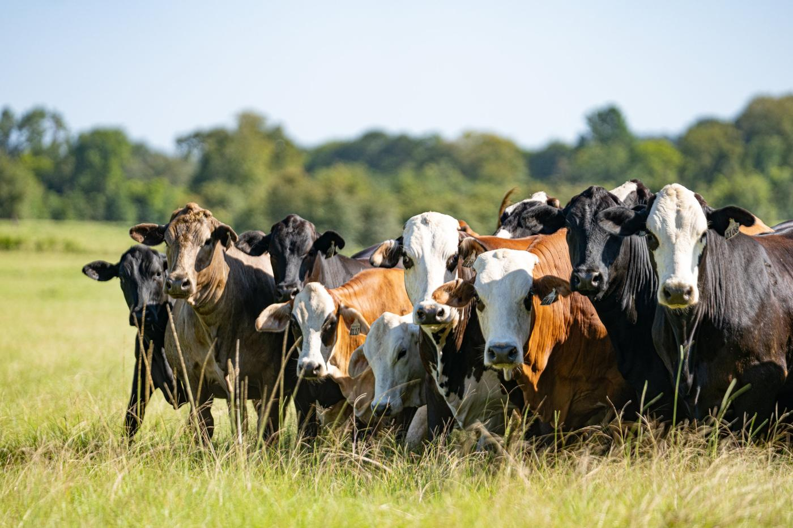

A decision-support platform that helps beef cattle producers make informed management, financial and operational decisions.
What is BACK40
Back40 is a comprehensive decision-support platform designed to help beef cattle producers make informed management, financial, and operational decisions. Developed through Texas A&M AgriLife Extension Service, Back40 brings together research-based tools, calculators, mapping resources, and educational content to support every stage of a cattle operation.
What it covers
Economic Decisions
From evaluating replacement heifer purchases and herd bull investments to analyzing retained ownership opportunities, feeding costs, grazing leases, cattle inventories and overall ranch profitability. Explore enterprise budgets, production and financial analyses, economic projections and recordkeeping resources built for the beef industry.
Land and Forage
Ranch mapping, forage and rangeland resources, nutrient management information and grazing tools help producers understand and manage the land that supports their operation.
New opportunities
As the platform grows, Back40 is adding resources for emerging opportunities in the cattle industry, including direct-to-consumer beef marketing, value-added enterprises and other business development strategies.

Back40 brings together the tools, data, and information producers need to make decisions from grass to genetics, budgets to beef sales, and everything in between.
Who it is for
Whether managing cow-calf, stocker, or retained ownership enterprises, evaluating capital investments, or exploring new market opportunities, Back40 provides practical, research-driven resources producers can apply to real-world decisions.
Our goal
To help cattle producers make better decisions, improve profitability, and build more resilient operations by providing trusted tools and information in one accessible location.
Contact
Pancho AbelloAssociate Professor & Extension SpecialistTexas A&M AgriLife ExtensionDepartment of Agricultural EconomicsAg Economics on the PlainsEmail: pancho.abello@ag.tamu.eduJuan Bautista BrunoGraduate Assistant ResearcherMAB CandidateTexas A&M AgriLife ExtensionDepartment of Agricultural EconomicsEmail: juanbruno@tamu.edu